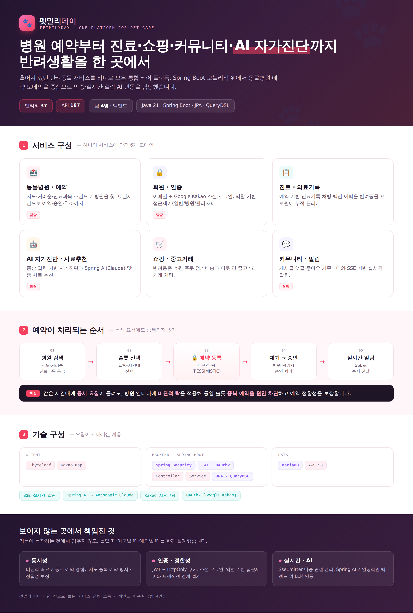
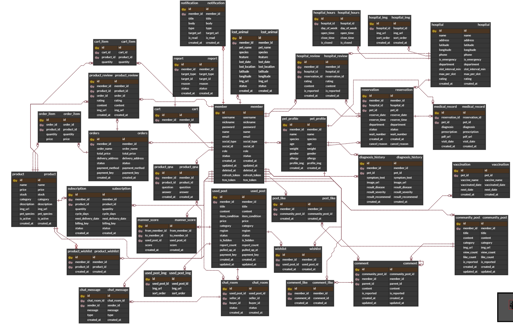

로그인 → AI 자가진단 → 병원 예약 → 실시간 승인·알림(SSE) → 용품샵 결제 → 중고거래 채팅·매너점수 → 커뮤니티까지, 실제 서비스 흐름을 담았습니다.
반려동물 보호자가 동물병원 검색·예약부터 쇼핑, 중고거래, 커뮤니티, AI 자가진단까지 하나의 서비스에서 이용할 수 있는 반려동물 통합 케어 플랫폼입니다. 흩어져 있던 반려동물 관련 서비스를 한곳으로 모으는 것을 목표로 했습니다.
전체 엔티티 37개 · API 187개 규모의 Spring Boot 모놀리식 웹 애플리케이션이며, 저는 동물병원·예약 도메인을 중심으로 인증·실시간 알림·AI 연동 등 서비스 전반의 공통 기능을 담당했습니다.
서비스 구성·예약 처리 순서·기술 구성을 한 장으로 정리했습니다.

이미지를 클릭하면 원본 크기로 볼 수 있습니다.
flowchart TD U["사용자 브라우저
(Thymeleaf)"] U -->|HTTPS 요청| C["Controller"] C --> SEC["Spring Security
JWT · OAuth2"] C --> S["Service
(비즈니스 로직)"] S --> R["Repository
JPA · QueryDSL"] R --> DB[("MariaDB")] S -->|SSE 알림| U S --> AI["Spring AI → Claude
사료 추천"] S --> KAKAO["Kakao 지도/지오코딩"] S --> S3["AWS S3
이미지 저장"]
동물병원 · 예약 · 진료기록 · 알림 도메인을 중심으로 37개 엔티티의 연관관계를 설계했습니다.

이미지를 클릭하면 원본 크기로 볼 수 있습니다.
| GET /hospitals | 병원 검색 — 키워드·진료과목·응급여부 동적 조건 + 거리순 정렬 |
| POST /reservations | 예약 등록 — 비관적 락으로 동일 슬롯 중복 방지 |
| PATCH /reservations/{id}/approve | 병원 관리자 예약 승인 (소유권 검증) |
| GET /notifications/subscribe | SSE 실시간 알림 구독 |
| POST /oauth2 · /auth/login | 소셜(Google·Kakao)·이메일 로그인, JWT 발급 |
| POST /ai/food-recommend | Spring AI(Claude) 기반 맞춤 사료 추천 |
BooleanExpression 기반 QueryDSL 동적 검색, 하버사인 거리 계산·근거리 정렬SseEmitter 기반, ConcurrentHashMap로 사용자별 다중 연결 관리·dead emitter 정리PESSIMISTIC_WRITE, findByIdForUpdate)으로 조회하도록 락 적용 순서를 설계했습니다.@Transactional을 적용해 변경 사항이 정상 반영되도록 수정했습니다.예약은 충돌 시 재시도가 사용자 경험을 해치고 경합 빈도도 낮지 않아, 재시도 기반 낙관적 락보다 처음부터 직렬화하는 비관적 락이 적합하다고 판단했습니다.
localStorage 저장은 XSS로 토큰이 노출될 수 있어, JS 접근이 불가한 HttpOnly 쿠키에 저장하고 SameSite=Lax로 CSRF를 완화했습니다.
키워드·진료과목·응급여부처럼 선택적 조건이 조합되는 검색에서 null 조건 자동 무시가 필요해, 타입 안전한 동적 쿼리를 선택했습니다.
알림은 서버→클라이언트 단방향으로 충분해, 양방향 연결을 유지하는 WebSocket보다 가벼운 SSE를 선택했습니다.